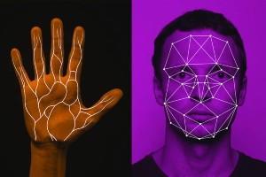

Have you ever wondered how exactly your smartphone is able to identify and authorize access to your phone with a simple tap of your finger or a short moment of smiling into the camera?

Well this astounding technology is called biometrics. Biometrics is the measuring and analysis of a person’s physical attributes or voice in order to identify a specific individual.